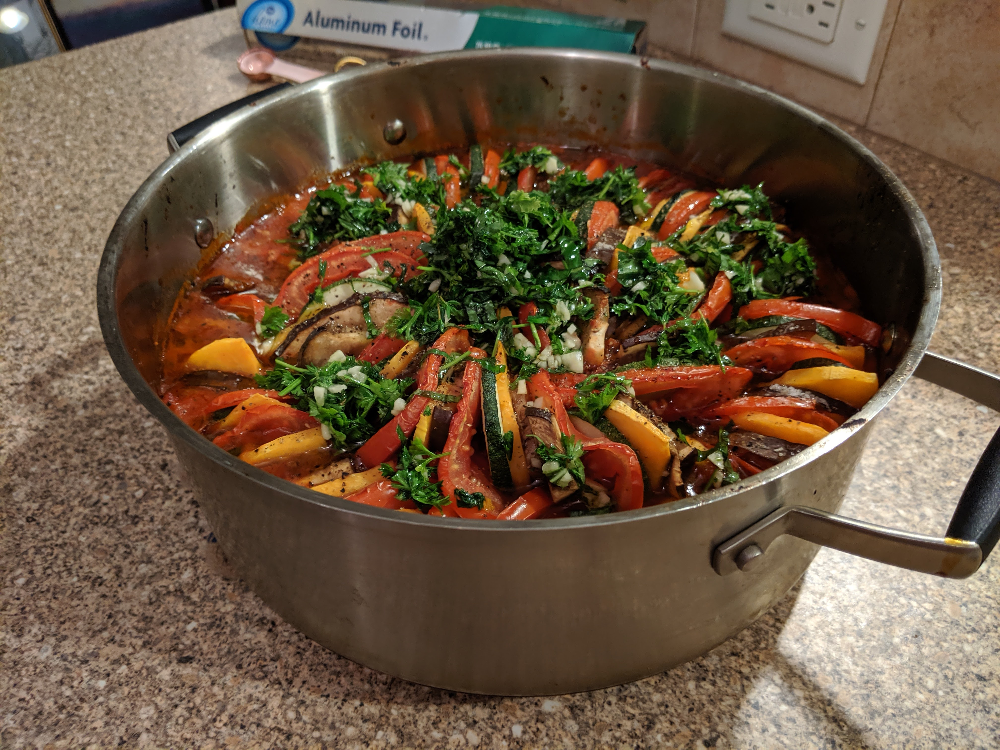
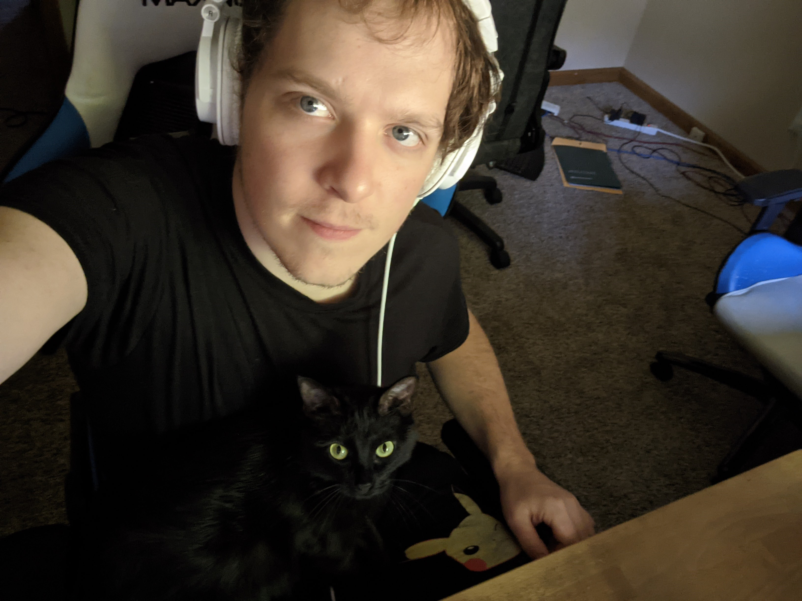
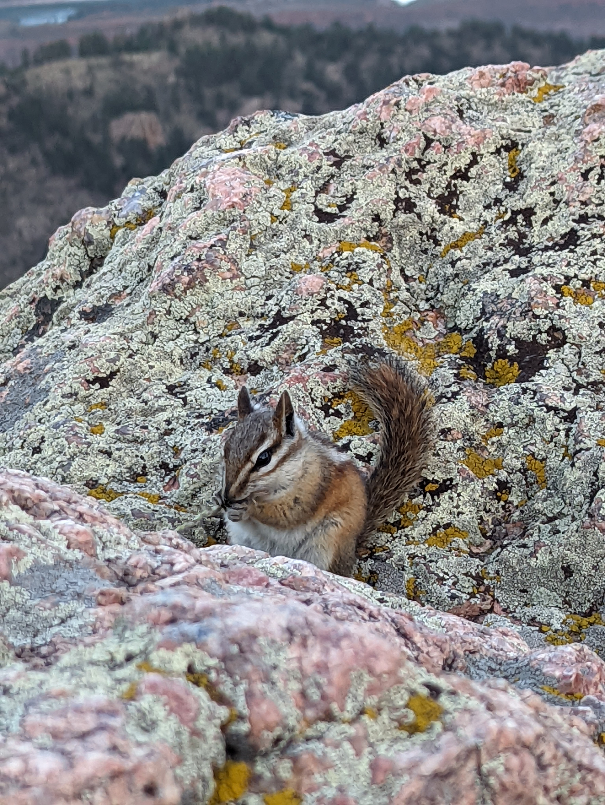

What I enjoy in my free time.
Now we're cooking with gas!

As a long time cook both professionally and at home, I like to make food for those around me. I've worked in taco shops
,vegan restaurants, worked on all sorts of food projects at home like home-made kombucha, a whole summer of salsas,
special hot sauces, and unique salad dressings. I love food and will cook my whole life.
Producing Music and Sounds

A new passion that I've picked up right at the end of 2020 was spurned on for my love for music, and my childhood.
I have played in bands, learned piano and flute, and now have an obsession with producing and mixing my own tracks.
A new obsession has hit and it's modular synthesizers, they have an odd way of interacting with sound and
there's new and crazy music gear being invented each year.
The Great Outdoors

My life has been a big journey of trying all sorts of activities and as a native Coloradoan
I have a lot of adventure in my system. I've been hiking up many mountains, road and mountain biking, rock-climbing,
skiing and snowboarding, winter camping in deep snow, canyoneering.